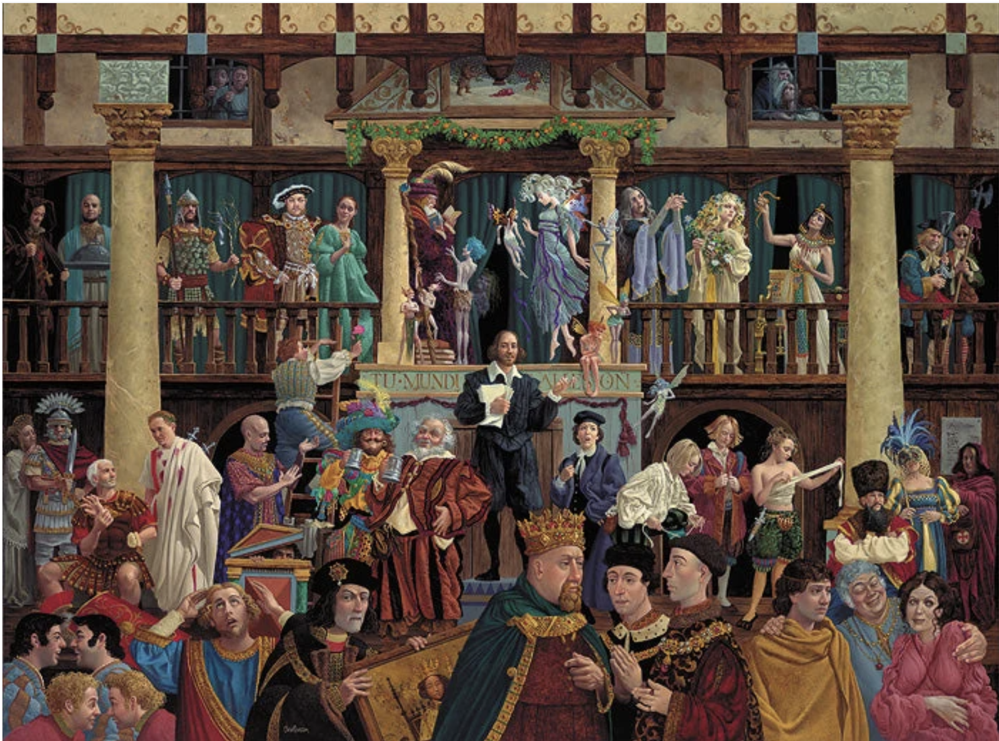
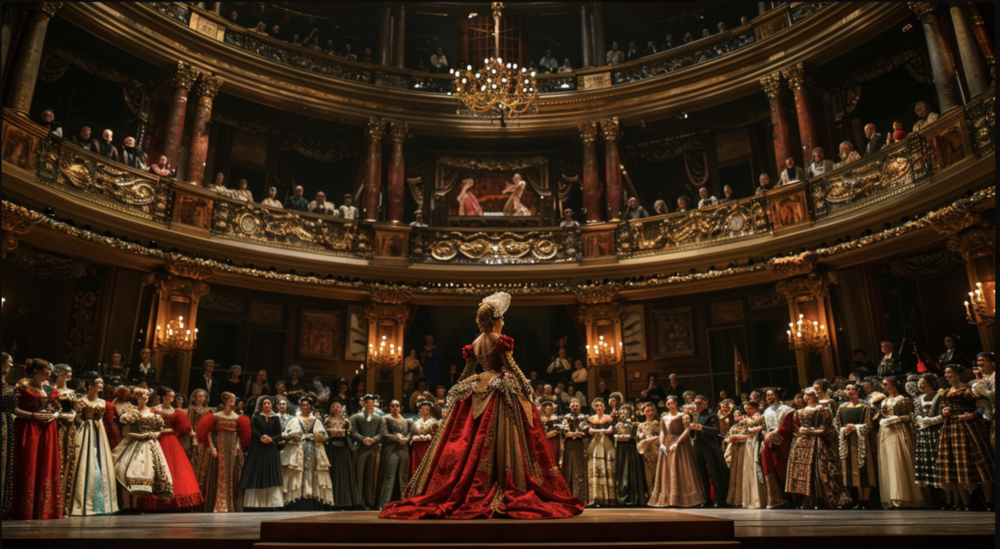
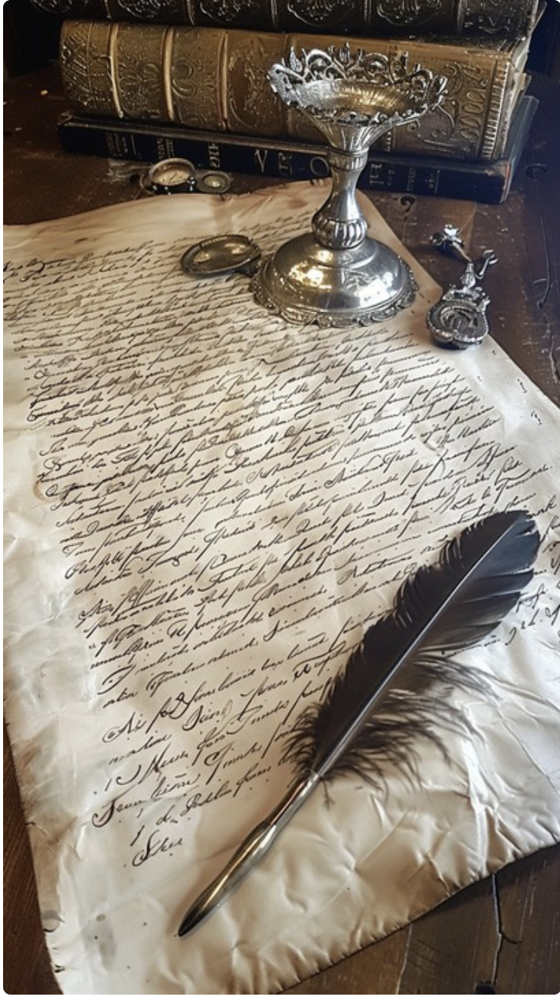

ACT I: The Prologue
This Bard returns 🙌 to TMU, a storyteller from the working space of Film 🎥 Production.
Interested in AI as the playground of the future, within the intersection of Art, Business and Tech.
The Bard is a creative with a passion for Innovation 💡, and is excited to be back at TMU to explore the future.
Innovation 💡 at its best, and Shakespeare is ecstatic to get the Ink & Quill out and modernize it.
The Bard was broody and depressed, with nothing exciting on the horizon. After writing, making, editing and creating, everything felt
lacklustre until large language models gave early adopters a sense of potential. The year 2023 was the turning of the tides.
The lights came back on, the Sun 🌞 was shining with curiosity and the Moon 🌙 felt magical once more.
Purpose was reborn, and Shakespeare smiled with ambition once more.
ACT II: The Gifts
- Deep Empathic Abilities to View from Different Perspectives, which allows the intrinsic quality of creating great characters.
- Master Storyteller.
- Strategic Planner with Big-picture 📸 Framing.
- A Social Creature, making Promotion and Networking a natural ability.
Good times.


